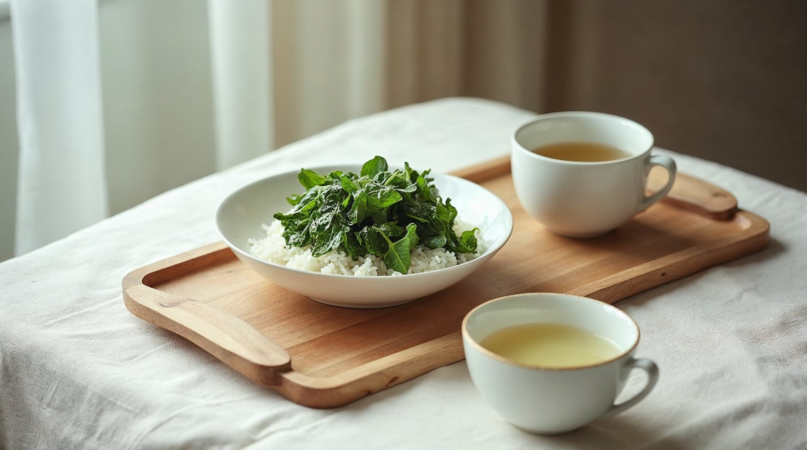
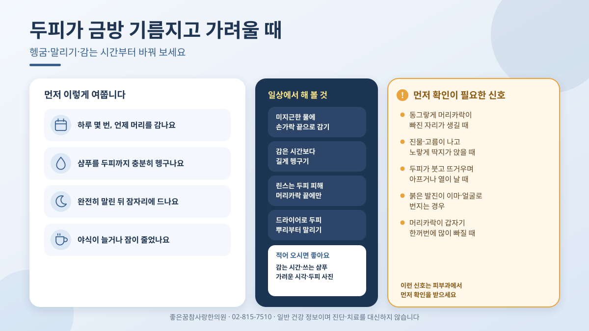

이종호 한의사 감수좋은꿈참사랑한의원 대표원장 (한의사 면허번호 19769)발행 2026-11-26 · 수정 2026-11-26
이 글의 차례
아침에 감고 나왔는데 오후 네 시쯤이면 앞머리가 이마에 착 달라붙습니다. 회의 중에 무심코 정수리를 긁었다가 손톱 밑에 낀 노르스름한 각질을 보고 얼른 손을 내립니다. 어깨에 떨어진 비듬이 신경 쓰여 검은 옷은 꺼내지 않게 된 지 오래입니다.
두피가 금방 기름지고 가렵다면 샴푸를 바꾸기 전에 헹구는 시간과 말리는 방법, 감는 시간대부터 살펴보세요. 저는 여기에 잠과 야식, 술, 대변까지 함께 여쭙습니다. 생활이 흔들린 시기와 두피가 유난히 기름진 시기가 겹치는 경우가 많기 때문입니다.
기름진 비듬에 붉은 기가 더해지고, 이마 머리선과 눈썹, 코 옆, 귀 뒤까지 번진다면 지루성 두피염일 수 있습니다. 진단은 피부과에서 받는 것이 기준이고, 진물이나 고름이 나거나 머리카락이 동그랗게 빠진 자리가 보이면 피부과 확인이 먼저입니다.
진료실에서 이런 말씀을 자주 듣습니다. 하루에 두 번을 감아도 소용이 없다고요. 비싼 두피 샴푸를 몇 통째 바꿔 봤는데 그때뿐이었다는 분, 사람들이 머리를 내려다볼까 봐 엘리베이터에서 고개를 들기 어렵다는 분도 계십니다.
두피는 남에게 잘 보이지 않는 곳이라 더 혼자 끙끙 앓게 됩니다. 가렵다고 긁으면 더 붉어지고, 붉어지면 더 가렵습니다. 그 사이를 오가며 지쳐 오셨을 마음부터 알아드리고 싶습니다.
왜 감아도 금방 기름질까요
두피는 몸에서 피지선이 가장 많이 모인 곳 가운데 하나입니다. 피지는 원래 피부를 보호하는 기름막이지만, 양이 많아지면 머리카락 뿌리를 눌러 납작하게 만들고 냄새와 가려움을 부릅니다. 피지 양은 사람마다 다르고 나이와 계절, 호르몬에 따라서도 달라집니다.
의외로 감는 방법이 기름짐을 키우는 경우가 많습니다. 샴푸와 린스가 두피에 남으면 가려움과 각질이 생기기 쉽고, 린스나 트리트먼트를 두피까지 바르면 뿌리 쪽이 더 빨리 기름져 보입니다. 뜨거운 물로 세게 문지르면 두피가 자극을 받아 붉어지기도 합니다.
젖은 채로 자는 습관도 자주 봅니다. 두피가 밤새 축축하게 남아 있으면 답답하고 가려워지기 쉽습니다. 모자나 헬멧을 오래 쓰는 분은 땀과 열이 두피에 갇혀 같은 일이 생깁니다.
잠이 부족하거나 야식과 술이 늘어난 시기에 두피가 더 기름지다는 분도 많습니다. 한의학에서는 몸 안의 열이 위로 오르는 분, 속이 막혀 대변이 무거운 분이 얼굴과 두피로 먼저 드러난다고 봅니다. 이 구분은 피부과 진단을 대신하지 않고 생활을 함께 살피는 길잡이로 씁니다.
지루성 두피염은 무엇이 다를까요
기름진 두피가 오래 이어지다 보면 지루성 두피염으로 넘어가는 분이 있습니다. 피지가 많은 곳에 흔히 사는 효모균과 피지, 그리고 피부의 예민한 반응이 겹쳐 염증이 생기는 것으로 알려져 있습니다. 옮는 병은 아닙니다.
지루성 두피염의 비듬은 하얗고 고운 가루라기보다 노르스름하고 기름진 덩어리에 가깝습니다. 두피가 군데군데 붉고, 머리선을 따라 이마로 넘어오거나 눈썹, 코 옆, 귀 뒤에도 붉은 각질이 생기는 경우가 많습니다.
잠잠했다가 다시 올라오기를 되풀이하는 것이 특징입니다. 겨울과 환절기, 잠이 줄고 스트레스가 쌓인 시기에 심해졌다가 여름에 덜하다는 분이 많지요. 비듬과 붉은 기가 함께 있을 때의 관리는 두피에 비듬이 많고 가렵고 붉을 때는 어떻게 살피나요?에도 정리해 두었습니다.
얼굴과 귀 뒤로 번질 때
지루성 두피염이 있는 분은 눈썹 사이와 코 옆 주름, 귀 뒤와 귓바퀴 안쪽에도 붉은 각질이 생기는 경우가 많습니다. 아침마다 각질을 문질러 떼거나 스크럽으로 밀면 그 자리가 더 붉어지기 쉽습니다.
얼굴은 순한 세안제로 거품만 얹었다가 헹구고, 수건으로 눌러 닦은 뒤 가벼운 보습제를 바르세요. 귀 뒤는 머리를 감을 때 샴푸 거품이 남기 쉬운 자리라 한 번 더 헹궈 줍니다. 얼굴에 바르는 약도 피부과에서 안내받은 범위 안에서 쓰시길 권합니다.

먹는 것과 속도 함께 봅니다
기름진 음식과 술을 먹은 다음 날 두피가 더 번들거리고 가렵다는 분이 많습니다. 저는 무엇을 더 먹을지보다 무엇이 지나쳤는지를 먼저 봅니다. 늦은 밤 기름진 안주, 며칠씩 막힌 대변, 배가 부른 채로 눕는 습관 같은 것들입니다.
특정 음식을 한꺼번에 끊으라고 말씀드리지는 않습니다. 저녁을 조금 가볍게, 채소를 넉넉히 두고, 먹은 날과 두피가 기름진 날을 함께 적어 보시면 겹치는 것이 보입니다.
비슷해 보이는 다른 두피와 나눠 보기
하얀 가루와 가려움이 있다고 다 지루성 두피염은 아닙니다. 아래는 진료실에서 흔히 헷갈리는 경우입니다. 최종 진단은 피부과에서 받으시는 것이 기준입니다.
- 건조한 비듬: 겨울에 하얗고 고운 가루가 날리고 붉은 기는 적은 편입니다. 두피가 땅기고 기름기는 덜합니다.
- 건선: 경계가 또렷한 붉은 판 위에 은백색 각질이 두껍게 쌓이고, 팔꿈치·무릎에도 비슷한 것이 생기기도 합니다.
- 접촉피부염: 염색약이나 새 샴푸를 쓴 뒤 두피와 이마, 귀 주변이 붉게 붓고 가렵습니다.
- 두피 곰팡이 감염: 아이들에게 많고, 동그랗게 머리카락이 끊어지거나 빠진 자리가 생깁니다. 피부과 검사가 필요합니다.
- 원형 탈모: 가려움 없이 동전 모양으로 머리카락이 빠진 매끈한 자리가 생깁니다.
잠·식사·스트레스, 그리고 계절
두피가 유난히 기름지고 가려웠던 때를 떠올려 보시면 겹치는 장면이 있습니다. 마감이나 시험으로 새벽에 잠든 주, 연말 모임으로 술과 야식이 이어진 주, 난방으로 공기가 마른 겨울입니다.
잠이 얕으면 밤사이 두피를 더 긁게 되고, 긁은 자리는 다음 날 더 붉고 가렵습니다. 잠과 피부의 관계는 잠이 부족하면 피부가 푸석하고 트러블이 나는 이유는 무엇인가요?에서 더 보실 수 있습니다.
큰 스트레스나 몸살을 겪고 몇 달 뒤 머리카락이 한꺼번에 많이 빠진다면 두피염과는 다른 흐름일 수 있습니다. 그 이야기는 큰 스트레스나 몸살 뒤 몇 달 지나 머리카락이 한 움큼씩 빠질 때는 어떻게 살피나요?에 따로 적어 두었습니다.
먼저 이렇게 여쭙니다
처음부터 정확하게 설명하지 못하셔도 괜찮습니다. 아래 질문을 떠올려 오시면 이야기가 한결 쉽게 풀립니다.
- 머리는 하루에 몇 번, 언제 감나요? 감은 뒤 몇 시간쯤 지나면 기름지기 시작하나요?
- 샴푸는 충분히 헹구나요? 린스나 트리트먼트를 두피까지 바르나요?
- 완전히 말린 뒤 자나요, 젖은 채로 자나요?
- 비듬은 하얀 가루인가요, 노르스름하고 기름진가요? 이마·눈썹·귀 뒤에도 붉은 각질이 있나요?
- 요즘 몇 시에 잠드시나요? 야식과 술은 일주일에 몇 번쯤인가요?
- 대변은 며칠에 한 번 보시나요? 못 본 날 가려움이 더 심한가요?
- 피부과에서 진단을 받았거나, 쓰고 있는 약용 샴푸와 바르는 약이 있나요?
일상에서 먼저 해 볼 수 있는 것
- 감기 전에 빗으로 가볍게 빗어 엉킨 머리카락과 각질을 풀기
- 미지근한 물로 1분쯤 두피까지 충분히 적신 뒤, 샴푸는 손바닥에서 거품을 내 두피에 얹기
- 손톱 대신 손가락 끝으로 1~2분 부드럽게 문지르고, 감은 시간보다 길다 싶을 만큼 헹구기
- 린스와 트리트먼트는 두피를 피해 머리카락 끝에만 바르기
- 수건으로 눌러 물기를 빼고, 미지근한 바람으로 두피 쪽 뿌리부터 완전히 말린 뒤 자기
- 베갯잇은 일주일에 한두 번 빨고, 모자·헬멧 안쪽도 땀이 배면 씻어 말리기
- 왁스·스프레이·헤어오일은 두피에서 떨어진 머리카락 쪽에만 쓰기
피부과에서 약용 샴푸를 권받았다면 거품을 두피에 두는 시간과 쓰는 횟수를 안내받은 대로 지켜 주세요. 좋다는 샴푸를 여러 개 번갈아 쓰면 무엇이 맞는지 알기 어렵습니다. 한 번에 하나씩, 두세 주씩 써 봐야 무엇이 맞는지 알기 쉽습니다.
자주 감을수록 기름이 더 난다는 말도 있고, 덜 감아야 줄어든다는 말도 있습니다. 사람마다 달라서 저는 하루 한 번, 저녁에 감고 완전히 말리는 것을 기본으로 두고 두피 상태를 보며 조절하시길 권합니다.
예를 들면 이런 경우입니다
실제 어느 분의 사연이 아니라, 진료실에서 자주 보는 모습을 바탕으로 그려 본 장면입니다.
예를 들어 밤늦게 퇴근해 머리를 감고 덜 말린 채 잠드는 직장인이라면, 아침이면 두피가 눅눅하고 오후에는 기름지고 가려워지기 쉽습니다. 감는 시간을 잠들기 한 시간쯤 전으로 당기고, 드라이어로 두피를 말리는 5분을 따로 떼어 두는 것부터 해 볼 수 있습니다.
예를 들어 하루 종일 헬멧을 쓰고 배달 일을 하는 경우, 땀이 찬 두피가 저녁까지 그대로 있어 가려움이 심해지기 쉽습니다. 쉬는 시간에 헬멧을 벗어 두피를 식히고, 안쪽 패드나 얇은 속모자를 자주 빨아 쓰며, 일을 마친 날은 그날 저녁에 감는 순서로 정해 봅니다.
예를 들어 시험 기간에 늦게 자고 야식이 늘어난 중고등학생이라면, 사춘기 무렵은 원래 피지가 늘어나는 시기여서 두피가 더 기름지다고 느끼기 쉽습니다. 샴푸를 바꾸기 전에 잠든 시각과 야식 먹은 날을 함께 적어, 두피가 유난히 기름진 날과 겹치는지 먼저 살펴봅니다.
스스로 점검해 보세요
- 샴푸를 헹구는 시간이 1분도 채 안 된다
- 린스나 트리트먼트를 두피까지 바른다
- 머리를 덜 말린 채 자는 날이 일주일에 두세 번 넘는다
- 뜨거운 물로 감거나 손톱을 세워 문지른다
- 비듬이 노르스름하고 기름지며, 이마·눈썹·귀 뒤에도 붉은 각질이 있다
- 잠이 줄거나 야식·술이 늘어난 주에 더 기름지고 가렵다
- 머리카락이 동그랗게 빠진 자리나 진물·딱지가 보인다
앞의 네 가지는 감고 말리는 습관부터 바꿔 볼 신호입니다. 다섯째 줄은 지루성 두피염일 수 있어 피부과 확인을 권하고, 마지막 줄에 해당하면 피부과를 먼저 찾아 주세요.
한의원에서 함께 살필 수 있는 경우
- 감아도 금방 기름지고 가려워 씻는 습관과 함께 식사·잠·대변을 살피고 싶은 경우
- 지루성 두피염 진단을 받았지만 잠 부족과 스트레스가 겹칠 때마다 다시 올라오는 경우
- 얼굴로 열이 잘 오르거나 땀이 많고, 환절기마다 두피 상태가 흔들리는 경우
좋은꿈참사랑한의원에 처음 오시면 진맥부터 합니다. 저는 처음 오신 분이든 다시 오신 분이든 모든 분께 맥을 짚습니다. 맥을 짚는 동안 잠과 소화, 대변, 땀과 체온, 요즘 마음 쓰이는 일을 여쭙고, 필요하다고 판단될 때 혀도 봅니다.
이어서 감는 시간과 횟수, 쓰는 제품, 가려움이 심한 때를 듣고, 두피의 붉은 곳과 각질, 기름기가 어디에 몰려 있는지 살핍니다. 피부과에서 받은 진단과 쓰는 약용 샴푸·바르는 약도 확인합니다. 갑작스러운 탈모나 진물이 있으면 피부과 확인을 먼저 안내합니다.
그다음 침, 한약 상담 가운데 지금 상태에 맞는 방법을 함께 정하고, 귀가 전에는 집에서 바꿔 볼 감기·말리기 순서를 정리해 드립니다. 치료 중에는 "괜찮으세요?" 하고 여쭙고, 편하면 이어 가고 불편하면 멈춥니다. 다시 오시면 지난번에 정한 감는 시간과 말리는 방법을 어떻게 지켜 보셨는지부터 이어서 여쭙습니다.
얼마나 지켜보고 언제 상담할까요
헹굼과 말리기, 감는 시간을 바꾼 뒤 2~3주는 기름지기 시작하는 시각과 가려움이 어떻게 달라지는지 지켜보세요. 4주가 지나도 그대로이거나 각질과 붉은 곳이 넓어진다면 상담을 권합니다.
가려움 때문에 잠을 설치는 날이 일주일에 여러 번이라면 더 기다리지 말고 상담해 보세요. 진물·고름이 나거나 머리카락이 동그랗게 빠진 자리가 보이면 바로 피부과 확인을 받으세요.
이렇게 기록해 오시면 상담이 쉬워집니다
두피는 날마다 달라 보여 기억만으로는 설명하기 어렵습니다. 2~4주만 간단히 적어 보세요. 휴대폰 메모장에 날짜와 한 단어씩만 남겨도 충분합니다. 기름진 날과 잠이 짧았던 날이 겹치는지 보이기 시작하면, 무엇부터 바꿀지 함께 정하기가 한결 쉬워집니다.
- 머리 감는 시간대와 횟수, 쓰는 샴푸와 헤어 제품
- 기름지고 가려운 느낌이 시작되는 시각
- 잠든 시각, 야식과 술을 먹은 날
- 대변을 본 날과 못 본 날
- 최근 염색이나 파마를 한 날, 새로 바꾼 제품
- 피부과에서 받은 약용 샴푸와 바르는 약 이름
붉은 곳이나 각질이 심한 날 찍어 둔 사진은 진료실에서 상태를 설명하는 데 도움이 됩니다. 가려움이 언제 심한지 적는 방법은 가려움이 낮에 심한지 밤에 심한지는 왜 묻고, 어떻게 적어 두나요?를 참고해 보세요.
이런 증상은 먼저 확인이 필요합니다
- 동전 크기로 동그랗게 머리카락이 빠진 자리가 생긴 경우
- 두피에 진물이나 고름이 나고 노랗게 딱지가 앉는 경우
이런 신호가 있으면 한의원보다 가까운 병원이나 응급실을 먼저 찾으세요.
하루에도 몇 번씩 머리에 손이 가고, 어깨를 털며 지내 오셨을 겁니다. 샴푸 하나 바꾸는 일보다 조금 길게 걸리더라도, 감는 순서와 잠, 속까지 함께 정리해 보겠습니다. 다음에 오시면 몇 시에 감고 어떻게 말리시는지부터 여쭙겠습니다.

여쭙는 것
- 머리는 하루에 몇 번, 언제 감나요? 감은 뒤 몇 시간쯤 지나면 기름지기 시작하나요?
- 샴푸는 충분히 헹구나요? 린스나 트리트먼트를 두피까지 바르나요?
- 완전히 말린 뒤 자나요, 젖은 채로 자나요?
생활에서 해 볼 것
- 감기 전에 빗으로 가볍게 빗어 엉킨 머리카락과 각질을 풀기
- 미지근한 물로 1분쯤 두피까지 충분히 적신 뒤, 샴푸는 손바닥에서 거품을 내 두피에…
- 손톱 대신 손가락 끝으로 1~2분 부드럽게 문지르고, 감은 시간보다 길다 싶을 만큼…
한의원에서 함께 살필 것
- 감아도 금방 기름지고 가려워 씻는 습관과 함께 식사·잠·대변을 살피고 싶은 경우
- 지루성 두피염 진단을 받았지만 잠 부족과 스트레스가 겹칠 때마다 다시 올라오는 경우
- 얼굴로 열이 잘 오르거나 땀이 많고, 환절기마다 두피 상태가 흔들리는 경우
먼저 확인이 필요한 신호
- 동전 크기로 동그랗게 머리카락이 빠진 자리가 생긴 경우
- 두피에 진물이나 고름이 나고 노랗게 딱지가 앉는 경우
한눈에 보는 표
| 구분 | 핵심 |
|---|---|
| 여쭙는 것 | 머리는 하루에 몇 번, 언제 감나요? 감은 뒤 몇 시간쯤 지나면 기름지기 시작하나요? 샴푸는 충분히 헹구나요? 린스나 트리트먼트를 두피까지 바르나요? |
| 생활에서 해 볼 것 | 감기 전에 빗으로 가볍게 빗어 엉킨 머리카락과 각질을 풀기 미지근한 물로 1분쯤 두피까지 충분히 적신 뒤, 샴푸는 손바닥에서 거품을 내 두피에 얹기 |
| 한의원에서 함께 살필 것 | 감아도 금방 기름지고 가려워 씻는 습관과 함께 식사·잠·대변을 살피고 싶은 경우 지루성 두피염 진단을 받았지만 잠 부족과 스트레스가 겹칠 때마다 다시 올라오는 경우 |
| 먼저 확인이 필요한 신호 | 동전 크기로 동그랗게 머리카락이 빠진 자리가 생긴 경우 두피에 진물이나 고름이 나고 노랗게 딱지가 앉는 경우 |
자주 묻는 질문
자주 감지 않으면 기름이 줄어드나요?
사람마다 다릅니다. 하루 한 번 저녁에 감고 완전히 말리는 것을 기본으로 두고, 두피 상태를 보며 횟수를 조절해 보시길 권합니다.
지루성 두피염은 옮나요?
옮는 병이 아닙니다. 피지와 두피에 흔히 사는 효모균, 피부의 예민한 반응이 겹쳐 생기는 것으로 알려져 있어 가족과 수건을 같이 써서 옮지는 않습니다.
약용 샴푸를 계속 써도 되나요?
피부과나 약국에서 안내받은 횟수와 방법을 따르세요. 처방받은 약용 샴푸와 바르는 약은 처방한 의사와 상의 없이 끊거나 바꾸지 않는 것이 안전합니다.
드라이 샴푸를 써도 되나요?
바쁜 날 가끔 쓰는 것은 괜찮지만 가루가 두피에 남기 쉬워, 쓴 날은 저녁에 감아 씻어 내는 편이 좋습니다.
좋은꿈참사랑한의원은 재진 때 지난번 이야기부터 이어서 여쭙니다. 진료시간과 예약은 오시는 길에서 확인하세요.
어디서 상담받을 수 있나요?
좋은꿈참사랑한의원은 서울 동작구 만양로2길 2 신성빌딩 3층·5층(서울 동작구 상도동, 7호선 상도역 3번 출구 근처)에 있습니다. 한의사 3명(이종호 대표원장, 조영기 수석진료원장, 정원영 진료원장)이 진료합니다. 진료시간은 평일 09:30~20:00(점심 13:00~14:00), 토·일·공휴일 09:30~15:00이며, 방문 전 전화로 확인을 권합니다. 예약은 네이버 예약, 카카오톡 상담, 전화 02-815-7510로 받습니다.
이 글은 일반적인 건강 정보이며 개인의 진단이나 치료를 대신하지 않습니다. 증상이 있거나 복용 중인 약이 있다면 진료를 통해 확인하세요. 치료 효과는 개인마다 다를 수 있습니다.
작성 기준: 일반적으로 알려져 있는 건강 정보를 참고해 정리했습니다(대표원장 감수). 증상 기록은 1~2주 동안 하루 1회, 비슷한 시간에 적어 오시면 지난 상태와 비교하기 쉽습니다.